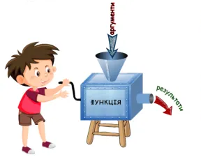
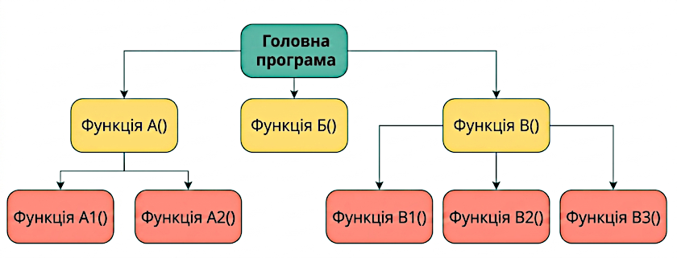
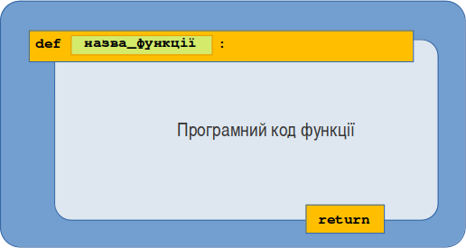
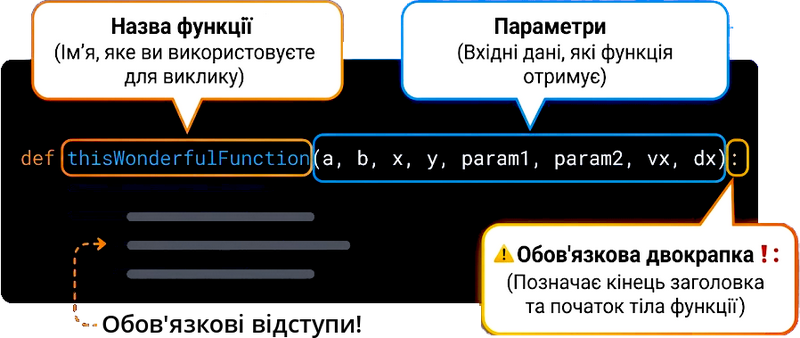
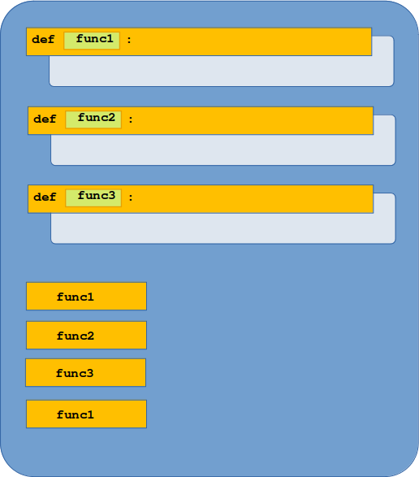
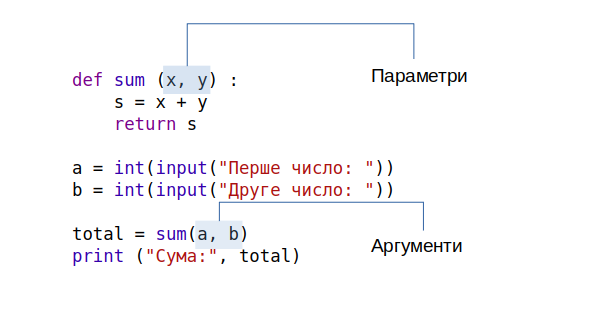

У попередніх розділах програми складалися з послідовності вказівок-команд. Але зі збільшенням обсягу програм виникає ситуація, коли потрібно повторно використовувати однакові фрагменти коду. Щоразу писати однаковий код незручно. Значно краще один раз створити потрібний набір команд, а потім викликати його в будь-якому місці програми. Саме для цього в Python існують функції — вони допомагають зробити програми коротшими, зрозумілішими й зручнішими для супроводу.
Функції дають змогу об'єднати будь-яку кількість вказівок програмного коду в блок під одним ім'ям і виконувати їх за потреби. Вони допомагають уникати повторення коду, спрощують розробку програм і роблять їх зрозумілішими.
Функція — поіменований блок програмного коду, призначений для виконання певних дій. Функцію можна багаторазово викликати за іменем, за потреби їй можна передавати аргументи, вона може повертати результат.
Припустімо, що ви — розробник, який створює комп'ютерну гру, і після кожного раунду вам потрібно вивести на екран вітання:
print("🌟🌟🌟🌟🌟🌟🌟🌟🌟🌟🌟🌟")
print("🏆 Вітаємо переможця! 🥇")
print("🌟🌟🌟🌟🌟🌟🌟🌟🌟🌟🌟🌟")
Якщо у вашій грі є 10 різних рівнів, вам доведеться скопіювати ці три рядки 10 разів у різні місця файлу. Це створює одразу кілька проблем:
Функції дозволяють написати цей алгоритм один раз, дати йому зрозуміле ім'я (наприклад, show_victory()) і викликати його стільки разів, скільки потрібно.
Насправді функції не є для вас чимось абсолютно новим, адже ви користуєтеся ними з першого дня вивчення Python! Всі знайомі вам базові команди — це готові функції, які розробники мови програмування Python заздалегідь написали для нас:
print() — функція виведення тексту на екран.input() — функція зчитування даних з клавіатури.len() — функція обчислення довжини (кількості елементів у списку чи літер у тексті).int() / str() — функції перетворення типів даних.random.randint() — функція генерації випадкового числа з модуля random.Коли ви пишете len(my_list), ви запускаєте прихований складний алгоритм, який рахує елементи списку. Вам не потрібно знати, як саме він це робить — ви просто берете готовий результат. Тож тепер ми навчимося створювати власні функції.
Функції — один із найважливіших інструментів програмування. Поки що функція є для вас своєрідною «чорною скринькою»:

Наприклад, якщо ви викликаєте функцію len() так:
print(len([0, 1, 2]))
🖥 Результат:
3
ось що відбувається:
len(), передаючи їй список як аргумент (тут список [0, 1, 2]);Інший приклад — виклик методу moy_spysok.append() (не забувайте, метод — це функція, яка діє на об'єкт, до якого вона прикріплена):
# Скрипт: dodaty_element.py
moy_spysok = [1, 2, 3]
moy_spysok.append(5)
print(moy_spysok)
🖥 Результат:
[1, 2, 3, 5]
append() додає ціле число 5 до об'єкта moy_spysok;Для програміста функція — це частина коду, що виконує певну послідовність інструкцій. Але перш ніж перейти до створення власних функцій, повернемося ще раз до поняття «чорної скриньки»:
math.cos() обчислює косинус. Нам просто потрібно знати, що їй потрібно передати кут у радіанах, і вона поверне косинус цього кута. Те, що відбувається всередині функції, стосується лише того, хто її написав.Щоб позначити місце, звідки ми викликаємо функцію, використовують термін «головна програма» (англ. main) — ми побачимо пізніше, що насправді функцію можна викликати з будь-якого місця коду. Головна програма — це код, який виконується під час запуску скрипту Python, тобто вся послідовність інструкцій поза функціями.

Загалом у Python спочатку пишуть функції, а потім головну програму.
Щоб визначити функцію, Python використовує ключове слово def (від англійського define — визначити). Якщо ми хочемо, щоб функція щось повертала, потрібно використати ключове слово return. Наприклад:
def kvadrat(x):
return x**2
print(kvadrat(2))
🖥 Результат:
4

Зверніть увагу, що синтаксис def використовує двокрапку, як і цикли for та while, а також умови if: тому очікується блок інструкцій. Так само, як для циклів і умов, відступ цього блоку інструкцій (який називається тілом функції) є обов'язковим.
Розберемо створення функції по частинах на найпростішому прикладі — функції, яка просто каже «Привіт!»:
def hello():
print("Привіт!")
print("Гарного дня!")
def починає створення інструмента.hello, calculate_price, save_file).() обов'язково йдуть після назви.: наприкінці рядка сигналізує про початок блока коду.
Якщо ви просто напишете конструкцію def hello(): і запустите програму, на екрані нічого не з'явиться. Створення функції — це як купівля кухонного комбайна: він просто стоїть у коробці, поки ви не ввімкнете його в розетку.
Щоб функція спрацювала, її потрібно викликати по імені у вашому основному коді (без відступів):
def hello():
print("Привіт!")
# Наш основний код:
hello() # Перший виклик
hello() # Другий виклик. Програма знову виконає код зсередини функції!
У попередньому прикладі ми передали аргумент функції kvadrat(), яка повернула значення, і ми одразу вивели його на екран за допомогою print(). Що означає «значення, що повертається»? Це означає, що його можна зберегти у змінній:
# Скрипт: zberezhy_rezultat.py
def kvadrat(x):
return x**2
rezultat = kvadrat(2)
print(rezultat)
🖥 Результат:
4
Тут результат, повернутий функцією, зберігається у змінній rezultat. Зауважте, що функція не обов'язково приймає аргумент і не обов'язково повертає значення, наприклад:
# Скрипт: pryvitannya.py
def pryvitannya():
print("Привіт")
pryvitannya()
🖥 Результат:
Привіт
У цьому випадку функція pryvitannya() просто виводить рядок "Привіт" на екран. Вона не приймає жодного аргументу і нічого не повертає. Отже, немає сенсу намагатися зберегти в змінній результат, повернутий такою функцією. Якщо ми все ж спробуємо, Python призначить значення None, що означає «ніщо»:
# Скрипт: povernene_znachennya.py
def pryvitannya():
print("Привіт")
zminna = pryvitannya()
print(zminna)
🖥 Результат:
Привіт
None
Це не є помилкою, оскільки Python не видає повідомлення про помилку, проте це здебільшого не має великого сенсу.
Програма на Python може мати як завгодно багато функцій, визначених користувачем (або й не мати жодної), викликати ці функції можна в будь-якому місці програми або з інших функцій.

Функція стає набагато кориснішою, якщо вона вміє підлаштовуватися під ситуацію. Наприклад, вітатися не просто абстрактно, а з конкретною людиною. Для цього використовують аргументи — імена змінних, які ми записуємо всередині круглих дужок під час створення функції:
def hello(name): # name — це аргумент (вхідна кишенька для даних)
print("Привіт,", name)
# Виклик функції з різними аргументами:
hello("Оля") # На екрані: Привіт, Оля
hello("Андрій") # На екрані: Привіт, Андрій
Історично склалося так, що імена аргументів, які записані у рядку оголошення функції, називають параметрами - таке формулювання ми можете зустріти у багатьох посібниках.

Функція може отримувати скільки завгодно аргументів — просто розділяйте їх комами. Наприклад, вказівка для обчислення площі прямокутника потребує ширини та висоти:
def print_rectangle_area(width, height):
area = width * height
print("Площа прямокутника:", area)
print_rectangle_area(5, 10) # Передаємо числа по порядку
Кількість аргументів, які можна передати функції, є змінною. Ми бачили вище функції, яким передавали нуль, один або кілька аргументів. У попередніх розділах ви зустрічали вбудовані функції Python, які приймали принаймні два аргументи. Згадайте, наприклад, range(1, 10) або range(1, 10, 2). Кількість аргументів залишається на розсуд того, хто розробляє нову функцію.
Особливість функцій у Python полягає в тому, що ви не зобов'язані вказувати тип аргументів, які їм передаєте, за умови, що операції, які ви виконуєте з цими аргументами, є допустимими. Python — мова з «динамічною типізацією», тобто він розпізнає тип змінних для вас під час виконання. Наприклад:
def pomnozhyty(x, y):
return x * y
print(pomnozhyty(2, 3))
print(pomnozhyty(3.1415, 5.23))
print(pomnozhyty("to", 2))
print(pomnozhyty([1, 3], 2))
🖥 Результат:
6
16.430045000000003
toto
[1, 3, 1, 3]
Оператор * розпізнає кілька типів (цілі числа, float, рядки, списки). Отже, наша функція pomnozhyty() здатна виконувати різні завдання! Хоча Python це дозволяє, будьте обережні з цією великою гнучкістю, яка може призвести до несподіванок у ваших майбутніх програмах. Загалом доцільніше, щоб кожен аргумент мав точний тип (цілі числа, float, рядки тощо).
return)У прикладі вище функція просто виводила площу на екран. Але частіше нам потрібно, щоб функція обчислила якесь значення і віддала його назад в основну програму, щоб ми могли далі використовувати його в математичних розрахунках чи записати у файл.
Для цього використовують ключове слово return (з англійської — повернути):
def square(x):
return x * x # Обчислити і віддати результат назад
return зупиняє виконання функції. Якщо після рядка з return написати будь-який інший код із відступом у цій же функції, комп'ютер його просто проігнорує.
Коли функція повертає значення через return, її виклик перетворюється на готовий результат. Ми можемо зберегти його у змінну або одразу вивести на екран:
def square(x):
return x * x
# Зберігаємо результат у змінну:
result = square(5) # тепер у змінній result лежить число 25
print("Квадрат числа 5 дорівнює:", result)
# Або виводимо результат одразу в print():
print(square(7)) # Виведе: 49
multiply(a, b), яка приймає два числа, перемножує їх та повертає результат через return. Викличте її для чисел 6 та 7.is_even(number), яка повертає True, якщо число парне, і False, якщо непарне (використовуйте % 2 == 0).
Коли ми працюємо з функціями, важливо добре розуміти, як поводяться змінні.
Змінна називається локальною, якщо вона створена у функції. Локальна змінна існуватиме і буде видимою лише під час виконання цієї функції.
Змінні, які ви створюєте всередині функції, народжуються, коли функція починає роботу, і повністю знищуються (забуваються) комп'ютером, як тільки функція завершується через return або кінець відступів:
def test():
secret_number = 10 # Локальна змінна
print(secret_number)
test() # Виведе 10
print(secret_number) # ПОМИЛКА! NameError: name 'secret_number' is not defined
Чому виникає помилка: основна програма нічого не знає про те, що відбувається всередині «секретної кімнати» функції test. Це захищає нас від випадкового затирання змінних із однаковими іменами у різних частинах коду.
Змінна називається глобальною, якщо вона створена в головній програмі (поза межами будь-яких функцій).
Глобальна змінна видима всюди в програмі, навіть всередині функцій:
school_name = "Нечаївський ліцей" # Глобальна змінна
def show_school():
print("Я навчаюся в:", school_name) # Функція без проблем бачить її
show_school()
return. Це робить код передбачуваним і чистим.
Розглянемо детальніший приклад, який допоможе краще зрозуміти ці концепції:
def kvadrat(x):
y = x**2
return y
# Головна програма.
zminna = 5
rezultat = kvadrat(zminna)
print(rezultat)
Подивімося, що відбувається в наведеному вище коді крок за кроком:
kvadrat() у пам'яті. Зверніть увагу, що він її ще не виконує! Функція поміщається в область пам'яті з назвою Global frame — це простір головної програми. У цьому просторі зберігатимуться всі глобальні змінні, створені в програмі. Python тепер готовий виконати головну програму.zminna. Оскільки вона створена в головній програмі, це буде глобальна змінна. Вона зберігатиметься в Global frame.kvadrat() викликається, і їй передається число zminna як аргумент. Функція виконується, і створюється новий фрейм, у якому Python Tutor покаже всі локальні змінні функції. Зверніть увагу, що змінна, передана як аргумент, яка називається x у функції, створюється як локальна змінна. Глобальні змінні, розташовані в Global frame, залишаються там.y створюється у функції. Отже, вона зберігається як локальна змінна функції.y головній програмі. Python Tutor показує вміст значення, що повертається.rezultat. Зверніть увагу: коли Python виходить з функції, простір змінних, виділений для функції, знищується. Усі змінні, створені у функції, більше не існують. Ми розуміємо, чому вони називаються локальними — вони існують лише тоді, коли функція виконується.rezultat, і виконання завершено.До цього часу ми систематично передавали ту кількість аргументів, яку очікувала функція. Що станеться, якщо функція очікує два аргументи, а ми передамо їй лише один?
def pomnozhyty(x, y):
return x * y
print(pomnozhyty(2, 3))
print(pomnozhyty(2))
🖥 Результат:
6
Traceback (most recent call last):
File "pomnozhyty_pomylka.py", line 5, in <module>
print(pomnozhyty(2))
TypeError: pomnozhyty() missing 1 required positional argument: 'y'
Ми бачимо, що передача лише одного аргументу функції, яка очікує два, призводить до помилки.
Коли ми визначаємо функцію
def funktsiia(x, y):, аргументиxтаyназиваються позиційними аргументами (англ. positional arguments). Їх обов'язково вказувати під час виклику функції. Крім того, необхідно дотримуватися того ж порядку під час виклику, що й у визначенні функції. У наведеному вище прикладі 2 відповідатимеx, а 3 відповідатимеy. Усе залежить від їхньої позиції, звідси й назва «позиційні».
Іноді параметру можна дати початкове (стандартне) значення. Якщо користувач під час виклику забуде передати свої дані, функція не видасть помилку, а просто скористається цим значенням за замовчуванням:
def hello(name="друже"):
print("Привіт,", name)
hello("Оля") # Виведе: Привіт, Оля
hello() # Аргументу немає, тому виведе: Привіт, друже
Те саме, більш формально:
# Скрипт: znachennya_za_zamovchuvannyam.py
def funktsiia(x=1):
return x
print(funktsiia())
print(funktsiia(10))
🖥 Результат:
1
10
Аргумент, визначений із синтаксисом
def funktsiia(arg=val):, називається аргументом за ключовим словом (англ. keyword argument). Передача такого аргументу під час виклику функції є необов'язковою. Цей тип аргументу не слід плутати з позиційними аргументами, представленими вище, синтаксис якихdef funktsiia(arg):.
Звичайно, можна передати кілька аргументів за ключовим словом:
def funktsiia(x=0, y=0, z=0):
return x, y, z
print(funktsiia())
print(funktsiia(10))
print(funktsiia(10, 8))
print(funktsiia(10, 8, 3))
🖥 Результат:
(0, 0, 0)
(10, 0, 0)
(10, 8, 0)
(10, 8, 3)
Ми бачимо, що наразі аргументи за ключовим словом приймаються в тому порядку, у якому ми їх передаємо під час виклику. Як зробити, якщо ми хочемо вказати аргумент за ключовим словом z, зберігши значення x та y за замовчуванням? Просто вказавши ім'я аргументу під час виклику:
# Скрипт: argument_za_imenem.py
def funktsiia(x=0, y=0, z=0):
return x, y, z
print(funktsiia(z=10))
🖥 Результат:
(0, 0, 10)
Коли у функції багато параметрів, легко переплутати їхній порядок під час виклику. У Python ви можете чітко вказувати імена параметрів під час передачі даних, і тоді їхній порядок стає неважливим:
def create_card(name, grade):
print(f"Учень: {name}, Клас: {grade}")
# Вказуємо імена параметрів явно:
create_card(grade=10, name="Максим") # Все спрацює ідеально!
Python навіть дозволяє вводити аргументи за ключовим словом у довільному порядку:
def funktsiia(x=0, y=0, z=0):
return x, y, z
print(funktsiia(z=10, x=3, y=80))
print(funktsiia(z=10, y=80))
🖥 Результат:
(3, 80, 10)
(0, 80, 10)
Що відбувається, коли ми маємо суміш позиційних аргументів та аргументів за ключовим словом? Позиційні аргументи завжди повинні стояти перед аргументами за ключовим словом:
def funktsiia(a, b, x=0, y=0, z=0):
return a, b, x, y, z
print(funktsiia(1, 1))
print(funktsiia(1, 1, z=5))
print(funktsiia(1, 1, z=5, y=32))
🖥 Результат:
(1, 1, 0, 0, 0)
(1, 1, 0, 0, 5)
(1, 1, 0, 32, 5)
Аргументи за ключовим словом завжди можна передавати в довільному порядку, якщо вказати їхні імена. Проте, якщо обидва позиційні аргументи a та b не передані функції, Python поверне помилку:
def funktsiia(a, b, x=0, y=0, z=0):
return a, b, x, y, z
print(funktsiia(z=0))
🖥 Результат:
Traceback (most recent call last):
File "vidsutni_pozytsiini_argumenty.py", line 4, in <module>
print(funktsiia(z=0))
TypeError: funktsiia() missing 2 required positional arguments: 'a' and 'b'
Вказувати імена аргументів за ключовим словом під час виклику функції — практика, яку ми рекомендуємо. Це чітко відрізняє їх від позиційних аргументів і є звичним стилем у Python. Це також дозволяє змінювати поведінку за замовчуванням багатьох вбудованих функцій. Наприклад, якщо ми хочемо, щоб функція print() не виводила символ нового рядка, ми можемо використати аргумент end:
print("Повідомлення", end="")
print(" — продовження на тому ж рядку")
Результат виконання:
Повідомлення — продовження на тому ж рядку
Величезна перевага Python полягає в тому, що функції здатні повертати кілька об'єктів одночасно, як у цьому фрагменті коду:
def kvadrat_kub(x):
return x**2, x**3
print(kvadrat_kub(2))
🖥 Результат:
(4, 8)
Насправді Python повертає лише один об'єкт, але він може бути послідовним, тобто містити інші об'єкти. У нашому прикладі Python повертає об'єкт типу кортеж (tuple) — тип, який ми бачили в Розділі «Словники та кортежі» (це своєрідний список з іншими властивостями). Наша функція могла б так само повернути список:
def kvadrat_kub2(x):
return [x**2, x**3]
print(kvadrat_kub2(3))
🖥 Результат:
[9, 27]
Повернення кортежу або списку з двох (або більше) елементів дуже зручно у поєднанні з множинним присвоюванням, наприклад:
def kvadrat_kub2(x):
return [x**2, x**3]
z1, z2 = kvadrat_kub2(3)
print(z1)
print(z2)
🖥 Результат:
9
27
Це дозволяє отримати кілька значень, повернутих функцією, і одразу призначити їх різним змінним. Той самий принцип чудово працює завдяки кортежам:
def get_min_max(numbers):
return min(numbers), max(numbers) # Повертає кортеж із двох чисел
# Миттєве розпакування результату в дві змінні:
lowest, highest = get_min_max([5, 12, 3, 89, 2])
print("Найменше:", lowest, "Найбільше:", highest)
Функція також може повертати булеве значення:
def ie_parnym(x):
if x % 2 == 0:
return True
else:
return False
# Головна програма.
for chyslo in range(1, 5):
if ie_parnym(chyslo):
print(f"{chyslo} є парним")
Оскільки функція повертає булеве значення, ми можемо використовувати запис if ie_parnym(chyslo):, що еквівалентно if ie_parnym(chyslo) == True:. Зазвичай функцію, яка повертає булеве значення, називають ie_schos (від англ. is_something), оскільки зрозуміло, що вона ставить питання, чи це правда, чи ні. Ми повернемося до цих понять у Розділі 13 «Більше про функції».
Щоб інші програмісти (або ви самі через кілька місяців) могли швидко зрозуміти, навіщо потрібна створена функція, одразу під рядком def додають короткий опис у потрійних лапках """. Це називається рядок документації, або docstring:
def calculate_circle_area(radius):
"""Обчислює та повертає площу круга за його радіусом."""
import math
return math.pi * (radius ** 2)
Функції можуть без проблем приймати списки як параметри та обробляти їх:
def show_words(words_list):
"""Виводить кожен елемент списку з нового рядка з красивим маркером."""
for word in words_list:
print("📍", word)
my_items = ["Зошит", "Ручка", "Лінійка"]
show_words(my_items)
Функції чудово допомагають структурувати роботу зі словниками, ховаючи всередині логіку пошуку чи додавання елементів:
def find_phone(phone_book, contact_name):
"""Шукає контакт у словнику телефонної книги."""
return phone_book.get(contact_name, "Контакт не знайдено")
my_contacts = {"Марко": "+38093...", "Олена": "+38050..."}
print(find_phone(my_contacts, "Олена"))
Поєднання функцій та операцій з файлами — найкращий спосіб очистити головний код програми від технічних деталей читання/запису:
def save_scores(scores_list, filename="results.txt"):
"""Записує список оцінок у текстовий файл."""
with open(filename, "w", encoding="utf-8") as file:
for score in scores_list:
file.write(str(score) + "\n")
Рекурсія — це особливий прийом у програмуванні, коли функція всередині свого тіла викликає сама себе.
Уявіть, що ви стоїте між двома дзеркалами і бачите нескінченний коридор зі своїх відображень. Це і є рекурсія:
def countdown(number):
print(number)
if number <= 1: # Умова зупинки, щоб програма не зависла назавжди!
return
countdown(number - 1) # Функція кличе саму себе з меншим числом
countdown(3)
# Виведе:
# 3
# 2
# 1
RecursionError).
Акронім DRY означає Don't Repeat Yourself («Не повторюйся»). Функції дозволяють дотримуватись цього принципу, уникаючи дублювання коду. Чим більше код дублюється в програмі, тим більше він стає джерелом помилок — особливо коли його доведеться змінювати.
Розглянемо, наприклад, наступний код, який перетворює кілька температур із градусів Фаренгейта в градуси Цельсія:
temp_u_fahrenheit = 60
print((temp_u_fahrenheit - 32) * (5 / 8))
temp_u_fahrenheit = 80
print((temp_u_fahrenheit - 32) * (5 / 8))
temp_u_fahrenheit = 100
print((temp_u_fahrenheit - 32) * (5 / 8))
🖥 Результат:
17.5
30.0
42.5
На жаль, у формулі перетворення є помилка. Правильна формула: temp_celsius = (temp_fahrenheit - 32) * (5 / 9). Потрібно повернутися до кожного рядка коду й виправити його. Це неефективно, особливо якщо той самий код використовується в різних місцях програми.
Записавши формулу перетворення лише один раз у функції, ми застосовуємо принцип DRY:
def konvertuvaty_fahrenheit_v_celsius(temperatura):
return (temperatura - 32) * (5 / 9)
temp_u_fahrenheit = 60
print(konvertuvaty_fahrenheit_v_celsius(temp_u_fahrenheit))
temp_u_fahrenheit = 80
print(konvertuvaty_fahrenheit_v_celsius(temp_u_fahrenheit))
temp_u_fahrenheit = 100
print(konvertuvaty_fahrenheit_v_celsius(temp_u_fahrenheit))
🖥 Результат:
15.555555555555557
26.666666666666668
37.77777777777778
І якщо у формулі знайдеться помилка, достатньо буде виправити її лише один раз — у функції konvertuvaty_fahrenheit_v_celsius().
До вивчення цієї теми наш основний файл програми міг містити 200 рядків суцільного тексту, де перемішувалися меню, читання файлу, математичні розрахунки та виведення на екран.
Професійний підхід вимагає розділити цей моноліт на маленькі логічні цеглинки. Тоді наш головний код програми стає коротким, зрозумілим і читається як план дій:
# Було (суцільний клубок коду без функцій) -> Стало:
data = load_data_from_file("input.txt")
results = calculate_statistics(data)
show_report_on_screen(results)
save_report_to_file(results, "report.txt")
Кожне слово тут — це окрема функція, написана нами вище. Таку програму неймовірно легко тестувати та читати.
1. Забули поставити круглі дужки при виклику.
def greet():
print("Привіт!")
greet # Помилка! Без дужок функція не виконається, Python просто покаже, що такий інструмент існує.
Правильно: greet().
2. Забули написати return.
def double(x):
result = x * 2 # Обчислили, але забули віддати!
my_num = double(5)
print(my_num) # Виведе: None (нічого)
Як виправити: завжди пишіть return result наприкінці обчислень.
3. Спроба використати локальну змінну ззовні.
def build():
status = "Готово"
build()
print(status) # Помилка NameError! Змінна status померла разом із завершенням функції.
[!exers]
Відтворіть цей приклад:
def kvadrat(x):
y = x**2
return y
# Головна програма.
z = 5
rezultat = kvadrat(z)
print(rezultat)
Потім проаналізуйте наступний код і спробуйте передбачити його виведення:
def obchyslyty_faktorial(n):
faktorial = 1
for i in range(2, n + 1):
faktorial = faktorial * i
return faktorial
# Головна програма.
nb = 4
faktorial_nb = obchyslyty_faktorial(nb)
print(f"{nb}! = {faktorial_nb}")
nb2 = 10
print(f"{nb2}! = {obchyslyty_faktorial(nb2)}")
Чи змогли ви правильно передбачити виведення?
Зверніть увагу на використання f-рядків, які ми розглядали в Розділі «Виведення даних». Тут ми бачимо ще одну можливість f-рядків у виразі
f"{nb2}! = {obchyslyty_faktorial(nb2)}": можна викликати функцію прямо між фігурними дужками (тут{obchyslyty_faktorial(nb2)})! Тому немає потреби створювати проміжну змінну для збереження результату функції.
Створіть функцію obchyslyty_stepin(x, y), яка повертає x**y, використовуючи оператор **. Нагадаємо:
print(2**2)
print(2**3)
print(2**4)
🖥 Результат:
4
8
16
У головній програмі обчисліть і виведіть на екран 2**i з i, що змінюється від 0 до 20 включно. Ми хочемо, щоб результат був представлений у такому форматі:
2^0 = 1
2^1 = 2
2^2 = 4
[...]
2^20 = 1048576
Повторіть вправу, яка малює піраміду. Cтворіть функцію zgeneruvaty_piramidu(), якій ви передаєте ціле число N і яка повертає піраміду з N рядків у вигляді рядка. Головна програма запитає користувача про бажану кількість рядків (використовуйте для цього функцію input()) і виведе піраміду на екран.
Створіть функцію ie_prostym(), яка приймає як аргумент додатне ціле число n (більше 2) і повертає булеве значення True, якщо n є простим, і False, якщо n не є простим. Визначте всі прості числа від 2 до 100. Ми хочемо отримати виведення, схоже на це:
2 є простим
3 є простим
4 не є простим
[...]
100 не є простим
Створіть функцію zashyfruvaty_litery(), яка приймає як аргумент список літер (наприклад ["a", "b", "c", "d", "e"]) і повертає новий список, у якому кожна літера замінена на наступну літеру латинського алфавіту (після "z" знову йде "a").
У головній програмі, починаючи зі списку literatury = ["a", "b", "c", "d", "e"], виведіть цей список та його зашифровану версію, отриману за допомогою вашої функції zashyfruvaty_litery(). Наприклад:
Оригінал: ['a', 'b', 'c', 'd', 'e']
Зашифровано: ['b', 'c', 'd', 'e', 'f']
Позицію літери в алфавіті можна отримати за допомогою функції
ord(), а перетворити код назад у літеру — за допомогою функціїchr().
Рефакторинг — перебудова і покращення структури вже написаного коду без зміни того, як сама програма працює для користувача.
Раніше ми створювали «Телефонний довідник» за допомогою великого циклу та словника, тож перетворимо його на більш професійний застосунок — розділимо кожну дію користувача в окрему, незалежну функцію.
# Головна база даних контактів (глобальний словник)
phone_book = {"Марко": "+380931112233", "Олена": "+380504445566"}
def show_all_contacts():
"""Виводить усі контакти на екран."""
print("\n--- Список контактів ---")
if not phone_book:
print("Довідник порожній.")
for name, phone in phone_book.items():
print(f"👤 {name}: {phone}")
def add_contact():
"""Запитує дані та додає новий контакт."""
name = input("Введіть ім'я: ").strip()
phone = input("Введіть номер телефону: ").strip()
if name and phone:
phone_book[name] = phone
print(f"✅ Контакт {name} успішно додано!")
else:
print("❌ Помилка: ім'я або телефон не можуть бути порожніми.")
def find_contact():
"""Шукає контакт за іменем."""
name = input("Введіть ім'я для пошуку: ").strip()
phone = phone_book.get(name)
if phone:
print(f"🔍 Знайдено: {name} -> {phone}")
else:
print("❌ Контакту з таким іменем не існує.")
# Головний цикл програми (Інтерфейс користувача)
while True:
print("\nМЕНЮ ДОВІДНИКА:")
print("1. Показати всі контакти")
print("2. Додати новий контакт")
print("3. Знайти контакт за іменем")
print("4. Вийти з програми")
choice = input("Оберіть дію (1-4): ").strip()
if choice == "1":
show_all_contacts()
elif choice == "2":
add_contact()
elif choice == "3":
find_contact()
elif choice == "4":
print("Дякуємо за використання довідника! До побачення.")
break
else:
print("Некоректний вибір. Спробуйте ще раз.")
while True, ми одразу розуміємо логіку програми. Технічні деталі (як саме працює input чи print) сховалися у функціях вище.delete_contact() та додасте один рядок elif choice == "5": delete_contact() у меню.
random: https://docs.python.org/3/library/random.htmlmath: https://docs.python.org/3/library/math.html